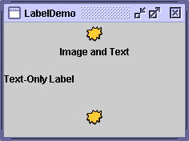
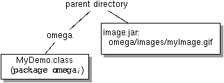
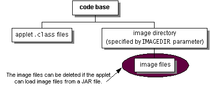

Feedback Form
|
|
Start of Tutorial > Start of Trail > Start of Lesson |
Search
Feedback Form |
Many Swing components, such as labels, buttons, and tabbed panes, can be decorated with an icon — a fixed-sized picture. An icon is an object that adheres to theIconinterface. Swing provides a particularly useful implementation of the
Iconinterface:ImageIconHere's a snapshot of an application with three labels, two decorated with an icon:
 The program uses one image icon to contain and paint the yellow splats. One statement creates the image icon and two more statements include the image icon on each of the two labels:TheImageIcon icon = createImageIcon("images/middle.gif", "a pretty but meaningless splat"); label1 = new JLabel("Image and Text", icon, JLabel.CENTER); ... label3 = new JLabel(icon);createImageIconmethod (used in the preceding snippet) is one we use in many of our code samples. It finds the specified file and return anImageIconfor that file, ornullif that file couldn't be found. Here is a typical implementation:If you copy/** Returns an ImageIcon, or null if the path was invalid. */ protected static ImageIcon createImageIcon(String path, String description) { java.net.URL imgURL = LabelDemo.class.getResource(path); if (imgURL != null) { return new ImageIcon(imgURL, description); } else { System.err.println("Couldn't find file: " + path); return null; } }createImageIcon, be sure to change the name of the class used for thegetResourcecall; it should be the name of the class that contains thecreateAppletImageIconmethod. For example, you might changeLabelDemo.class.getResourcetoMyApp.class.getResource. In the preceding snippet, the first argument to theImageIconconstructor is relative to the location of the classLabelDemo, and will be resolved to an absolute URL. Thedescriptionargument is a string that allows assistive technologies to help a visually impaired user understand what information the icon conveys.Generally, applications provide their own set of images used as part of the application, as is the case with the images used by many of our demos. You should use the
ClassgetResourcemethod to obtain the path to the image. This allows the application to verify that the image is available and to provide sensible error handling if it is not. When the image is not part of the application,getResourceshould not be used and theImageIconconstructor is used directly. For example:ImageIcon icon = new ImageIcon("/home/sharonz/images/middle.gif", "a pretty but meaningless splat");When you specify a filename or URL to an
ImageIconconstructor, processing is blocked until after the image data is completely loaded or the data location has proven to be invalid. If the data location is invalid (but non-null), anImageIconis still successfully created; it just has no size and, therefore, paints nothing. As we showed in thecreateImageIconmethod, it's wise to first verify that the URL points to an existing file before passing it to theImageIconconstructor. This allows graceful error handling when the file isn't present. If you want more information while the image is loading, you can register an observer on an image icon by calling itssetImageObservermethod.Under the covers, each image icon uses an
ImageMediaTrackerThe rest of this section covers the following topics:
Here's an applet that uses eight image icons. In the snapshot, you can see three of them: one displays the photograph and two decorate buttons with small arrows.
This is a picture of the applet's GUI. To run the applet, click the picture. The applet will appear in a new browser window.[PENDING: New screenshot forthcoming.]
Try this:
- Run IconDemoApplet using JavaTM Web Start. Or, to compile and run the example yourself, consult the example index.
- Click the Previous Picture and Next Picture buttons to view the photographs.
- Hold the mouse over a photograph. A tool tip appears that indicates the filename of the current photograph and its width and height.
IconDemoApplet demonstrates icons used in the following ways:
- As a GUI element attached to a button (the left and right arrows).
- As an alternate version of the icon to be used when the button is disabled (dimmed left and right arrows).
- To display an image (the four photographs).
The code that follows creates the four arrow image icons and attaches them to the two buttons. You can find the applet's code in IconDemoApplet.java
.
//Create the next and previous buttons. ImageIcon nextIcon = createAppletImageIcon("images/right.gif", "a right arrow"); ImageIcon dimmedNextIcon = createAppletImageIcon("images/dimmedRight.gif", "a dimmed right arrow"); ImageIcon previousIcon = createAppletImageIcon("images/left.gif", "a left arrow"); ImageIcon dimmedPreviousIcon = createAppletImageIcon("images/dimmedLeft.gif", "a dimmed left arrow"); nextButton = new JButton("Next Picture", nextIcon); nextButton.setDisabledIcon(dimmedNextIcon); nextButton.setVerticalTextPosition(AbstractButton.CENTER); nextButton.setHorizontalTextPosition(AbstractButton.LEFT); ... previousButton = new JButton("Previous Picture", previousIcon); previousButton.setDisabledIcon(dimmedPreviousIcon); previousButton.setVerticalTextPosition(AbstractButton.CENTER); previousButton.setHorizontalTextPosition(AbstractButton.RIGHT);The action handler for the buttons initiates loading the photographs into the image icon:
//User clicked either the next or the previous button. public void actionPerformed(ActionEvent e) { //Show loading message. photographLabel.setIcon(null); photographLabel.setText("Loading image..."); //Compute index of photograph to view. if (e.getActionCommand().equals("next")) { current += 1; if (!previousButton.isEnabled()) previousButton.setEnabled(true); if (current == pictures.size() - 1) nextButton.setEnabled(false); } else { current -= 1; if (!nextButton.isEnabled()) nextButton.setEnabled(true); if (current == 0) previousButton.setEnabled(false); } //Get the photo object. Photo pic = (Photo)pictures.elementAt(current); //Update the caption and number labels. captionLabel.setText(pic.caption); numberLabel.setText("Picture " + (current+1) + " of " + pictures.size()); //Update the photograph. ImageIcon icon = pic.getIcon(); if (icon == null) { //haven't viewed this photo before loadImage(imagedir + pic.filename, current); } else { updatePhotograph(current, pic); } }The photographs are loaded in a separate thread by the
loadImagemethod — its code is shown a little later in this section.The
Photoclass, in Photo.javapublic class Photo { public String filename; public String caption; public int width; public int height; public ImageIcon icon; public Photo(String filename, String caption, int w, int h) { this.filename = filename; if (caption == null) this.caption = filename; else this.caption = caption; width = w; height = h; icon = null; } public void setIcon(ImageIcon i) { icon = i; } public ImageIcon getIcon() { return icon; } }The Loading Images Into Applets section discusses how images are loaded into this applet and shows the
createAppletImageIconmethod — a version ofcreateImageIconcustomized for applets that are deployed using Java Plug-in.
Most often, an image icon's data comes from an image file. There are a number of valid ways that your application's class and image files may be configured on your file server. You might have your class files in a JAR file, or your image files in a JAR file; they might be in the same JAR file, or they might be in different JAR files. The following figures illustrate a few of the ways these files can be configured:
[PENDING: New figures forthcoming. The new figures will show more family-tree style lines.]
Class file next to an image directory containing the image file, in GIF format. Class file in same directory as JAR file. The JAR file was created with all the images in an imagesdirectory.Class file in one JAR file and the images in another JAR file. Class and image files in same JAR file. If you are writing a real-world application, it is likely (and recommended) that you put your files into a package. For more information on packages, see Creating and Using Packages
 Class file in directory named omega. Image inomega/imagesdirectory.Class file in omegadirectory. Image in JAR file not inside ofomegadirectory, but created withomega/imageshierarchy.One big JAR file with class files under omegadirectory and image files underomega/imagesdirectory.All seven configurations shown are valid, and the same code reads the image:
java.net.URL imageURL = myDemo.class.getResource("images/myImage.gif"); ... if (imageURL != null) { ImageIcon icon = newImageIcon(imageURL); }The
getResourcemethod causes the class loader to look through the directories and JAR files in the program's class path, returning a URL as soon as it finds the desired file. In our example the MyDemo program attempts to load theimage/myImage.giffile. The class loader looks through the directories and JAR files in the program's class path forimage/myImage.gif. If the class loader finds the file, it returns the URL of the JAR file or directory that contained the file. If another JAR file or directory in the class path contains theimages/myImage.giffile, the class loader returns the first instance that contains the file.
Version note: In versions of Java Plug-in before 1.4,getResourcedoesn't look in JAR files. See Loading Images Into Applets for details.Here are three ways to specify the class path:
- Using the
-cpor-classpathcommand-line argument. For example, in the case where the images are in a JAR file namedimages.jarand the class file is in the current directory:java -cp .;image.jar MyDemo [Microsoft Windows] java -cp ".;image.jar" MyDemo [Unix-emulating shell on Microsoft Windows — you must quote the specified path] java -cp .:image.jar MyDemo [Unix]If your image and class files are in separate JAR files, your command line will look something like:
java -cp .;MyDemo.jar;image.jar MyDemo [Microsoft Windows]In the situation where all the files are in one JAR file, you can use either of the following commands:
java -jar MyAppPlusImages.jar java -cp .;MyAppPlusImages.jar MyApp [Microsoft Windows]For more information, see the JAR Files
- In the program's JNLP file (used by Java Web Start). For example, here is the JNLP file used by
DragPictureDemo:<?xml version="1.0" encoding="utf-8"?> <!-- JNLP File for DragPictureDemo --> <jnlp spec="1.0+" codebase="http://java.sun.com/docs/books/tutorialJWS/src/uiswing/misc/example-1dot4" href="DragPictureDemo.jnlp"> <information> <title>DragPictureDemo</title> <vendor>The Java(tm) Tutorial: Sun Microsystems, Inc.</vendor> <homepage href="http://java.sun.com/docs/books/tutorial/uiswing/misc/example-1dot4/index.html#DragPictureDemo"/> <description>DragPictureDemo</description> <description kind="short">A demo showing how to install data transfer on a custom component.</description> <offline-allowed/> </information> <resources> <j2se version="1.4"/> <jar href="allClasses.jar"/> <jar href="images.jar"/> </resources> <application-desc main-class="DragPictureDemo"/> </jnlp>In this example, the class files and the images files are in separate JAR files. The JAR files are specified using the XML
jartag.
- Setting the
CLASSPATHenvironment variable. This last approach is not recommended. IfCLASSPATHis not set, the current directory (".") followed by the location of the system classes shipped with the JRE are used by default.Most of our examples put the images in an
imagesdirectory under the directory that contains the examples' class files. When we create JAR files for the examples, we keep the same relative locations, although often we put the class files in a different JAR file than the image JAR file. No matter where the class and image files are in the file system — in one JAR file, or in multiple JAR files, in a named package, or in the default package — the same code finds the image files usinggetResource. For more information, see Accessing Resources in a Location-Independent Mannerand the Application Development Considerations
Applets generally load image data from the computer that served up the applet. There are two reasons for this. First, untrusted applets can't read from the file system on which they're running. Second, it just makes sense to put an applet's class and data files together on the server.
The
IconDemoAppletprogram initializes each of its image icons from GIF files whose locations are specified with URLs. BecauseIconDemoAppletis designed to be an untrusted applet, we must place the image files under the applet's code base (the server directory containing the applet's class files). The following figure shows the locations of files forIconDemoApplet. [PENDING: New figure forthcoming. The new figure will have box removed from around the text "code base" and "image directory (specified by
IMAGEDIRparameter)". The following text replaces the previous comment: "The image files or image directory can be deleted if the applet loads image files from a JAR file."]The
APPLETtag is where you specify information about the images used in the applet. For example, here's part of the tag for IconDemoApplet:<applet code="IconDemoApplet.class" codebase="example-1dot4/" archive="iconAppletClasses.jar, iconStartupImages.jar, iconAppletImages.jar" width="400" height="360"> <param NAME="IMAGEDIR" VALUE="images"> <param NAME="IMAGE0" VALUE="stickerface.gif"> <param NAME="CAPTION0" VALUE="Sticker Face"> <param NAME="WIDTH0" VALUE="230"> <param NAME="HEIGHT0" VALUE="238"> ... </applet>The
IMAGEDIRparameter indicates that the image files should be in a directory namedimagesrelative to the applet's code base. Applets generally use a URL that is constructed relative to the applet's code base.As you can see from the
archiveattribute of the precedingAPPLETtag, we have deployed IconDemoApplet using three JAR files. The classes are in one JAR file, the images required for starting up the UI (the arrow images) are in another JAR file, and the rest of the images are in a third JAR file. Separating the UI images from the other images means a quicker start-up time.For more information on specifying JAR files with the
APPLETtag, see Using the APPLET TagWhen using Java Web Start to deploy an applet, you can use the same approach for loading resources as you do for applications — the
getResourcemethod. However, for applets deployed using Java Plug-in,getResourceAsStreamis more efficient for loading images.Here is the code from IconDemoApplet that reads the images using
Version note: Prior to release 1.4, when called from an applet deployed using Java Plug-in,getResourcedid not look in JAR files for resources, it looked only in the code base. In this situation, you must either put the images in the code base, or you must usegetResourceAsStream.getResourceAsStream:[NOTE TO REVIEWER: Please check the following code carefully. It works, but is it the best possible example for programmers to follow?]
You might want to copy thepublic class IconDemoApplet extends JApplet ... { protected String leftButtonFilename = "images/left.gif"; ... public void init() { ... ImageIcon leftButtonIcon = createAppletImageIcon(leftButtonFilename, "an arrow pointing left"); ... } ... //Returns an ImageIcon, or null if the path was invalid. //When running an applet using Java Plug-in, //getResourceAsStream is more efficient than getResource. protected static ImageIcon createAppletImageIcon(String path, String description) { int MAX_IMAGE_SIZE = 75000; //Change this to the size of //your biggest image, in bytes. int count = 0; BufferedInputStream imgStream = new BufferedInputStream( IconDemoApplet.class.getResourceAsStream(path)); if (imgStream != null) { byte buf[] = new byte[MAX_IMAGE_SIZE]; try { count = imgStream.read(buf); } catch (IOException ieo) { System.err.println("Couldn't read stream from file: " + path); } try { imgStream.close(); } catch (IOException ieo) { System.err.println("Can't close file " + path); } if (count <= 0) { System.err.println("Empty file: " + path); return null; } return new ImageIcon(Toolkit.getDefaultToolkit().createImage(buf), description); } else { System.err.println("Couldn't find file: " + path); return null; } } ... }createAppletImageIconmethod for use in your applet. Be sure to change theIconDemoAppletstring in the call togetResourceAsStreamto the name of your applet.
Because the photograph images are large,IconDemoAppletuses several techniques to improve the performance of the program as perceived by the user.As with all performance-related issues, these techniques are applicable in some situations and not others. These are not general recommendations for all programs, but some techniques you can try to improve the user's experience. Furthermore, the techniques described here are designed to improve the program's perceived performance, but don't necessarily impact its real performance.
- Providing dimmed icons — the applet provides dimmed versions of the arrows for the buttons:
Without this code, the dimmed versions of the arrows would be computed, which causes a slight delay the first time each button is dimmed. Basically, this technique trades a noticeable delay when the user clicks the buttons for a smaller, less noticeable delay in theimagedir = getParameter("IMAGEDIR"); if (imagedir != null) imagedir = imagedir + "/"; ... ImageIcon dimmedNextIcon = createAppletImageIcon( "images/dimmedRight.gif", "a dimmed right arrow"); ImageIcon dimmedPreviousIcon = createAppletImageIcon( "images/dimmedLeft.gif", "a dimmed left arrow"); ... nextButton.setDisabledIcon(dimmedNextIcon); ... previousButton.setDisabledIcon(dimmedPreviousIcon);initmethod. An alternative would be to load the dimmed icons in a background thread after the GUI has been created and shown.This applet uses four separate image files just to display arrows on two buttons. The performance impact of these little images can add up, especially if the browser in which the applet is running uses a separate HTTP connection to load each one. A faster alternative is to implement a custom
Iconthat paints the arrows. See Creating a Custom Icon Implementation for an example.
- Lazy image loading — the applet's initialization code loads only the first photograph. Each other photograph gets loaded when the user first requests to see it. By loading images if and when needed, the applet avoids a long initialization. The downside is that the user has to wait to see each photograph. We try to make this wait less noticeable by providing feedback about the image loading and allowing the user to use the GUI while the image is loading.
Not all programs can benefit from lazy loading. For example, the
TumbleItem.javaapplet performs an animation, and all of the images in the animation are needed up-front. That applet's initialization code causes the images to be loaded in a background thread, so that the applet can present a GUI (a "Loading Images..." label) before the images have loaded.
- Background image loading — the applet uses a
SwingWorkerto load each photograph image in a background thread. Because the image is loaded in a separate thread, the user can still click the buttons and otherwise interact with the applet while the image is loading.Here's the code to load each image:
Theprivate void loadImage(final String imagePath, final int index) { final SwingWorker worker = new SwingWorker() { ImageIcon icon = null; public Object construct() { icon = createAppletImageIcon(imagePath, "photo #", + index); return icon; //return value not used by this program } public void finished() { Photo pic = (Photo)pictures.elementAt(index); pic.setIcon(icon); if (index == current) updatePhotograph(index, pic); } }; worker.start(); }constructmethod, which creates the image icon for the photograph, is invoked by the thread that's created by theSwingWorkerconstructor and started by thestartmethod. After the image icon is fully loaded, thefinishedmethod is called. Thefinishedmethod is guaranteed to execute on the event-dispatching thread, so it can safely update the GUI to display the photograph.
- Status updates — while the image is loading in the background, the applet displays a status message:
This lets the user know that the program is doing something. After the image is loaded, the applet displays the photograph in the viewing area.photographLabel.setIcon(null); photographLabel.setText("Loading image...");
- Caching — after each photograph is viewed for the first time, the applet caches the image icon for later use. Thus if the user revisits a photograph, the program can use the same image icon and display the photograph quickly.
If you write a program without caching image icons, it may appear that some implicit image caching is going on within the Java platform. However, this is a side effect of the implementation and is not guaranteed. If your program uses one image in many places in its GUI, you can create the image icon once and use the same instance multiple times.
If an image differs depending on the state of the component it's within, consider implementing a customIconclass to paint the image. The really nice thing about a custom icon is that you can easily change the icon's appearance to reflect its host component's state.Look-and-feel implementations often use custom icons. For example, the Java look and feel uses a single
MetalCheckBoxIconobject to paint all of the check boxes in the GUI. TheMetalCheckBoxIconpaints itself differently depending on whether its host component is enabled, pressed, or selected.In this section, we'll convert a program called
ButtonDemoso that it uses a custom icon to paint these two arrows:You can see a picture of
ButtonDemoin How to Use the Common Button APIButtonDemo.javaButtonDemouses the following code to load the arrows from GIF files and put the arrows into buttons:Here is the new code, which uses a custom icon class namedImageIcon leftButtonIcon = createImageIcon("images/right.gif", "an arrow pointing right"); ... ImageIcon rightButtonIcon = createImageIcon("images/left.gif", "an arrow pointing left"); b1 = new JButton("Disable middle button", leftButtonIcon); ... b3 = new JButton("Enable middle button", rightButtonIcon);ArrowIcon. Only the bold lines have changed. You can run CustomIconDemo using Java Web Start. Or, to compile and run the example yourself, consult the example index.You can find the implementation of the custom icon class inIcon leftButtonIcon = new ArrowIcon(SwingConstants.TRAILING); ... Icon rightButtonIcon = new ArrowIcon(SwingConstants.LEADING); b1 = new JButton("Disable middle button", leftButtonIcon); ... b3 = new JButton("Enable middle button", rightButtonIcon);ArrowIcon.javaNote that the icon sets the current color. If you don't do this, then the icon's painting might not be visible. For more information about painting, see Performing Custom Paintingclass ArrowIcon implements Icon, SwingConstants { public ArrowIcon(int direction) { if (direction == LEADING) { xPoints[0] = width; yPoints[0] = -1; xPoints[1] = width; yPoints[1] = height; xPoints[2] = 0; yPoints[2] = height/2; xPoints[3] = 0; yPoints[3] = height/2 - 1; } else /* direction == TRAILING */ { xPoints[0] = 0; yPoints[0] = -1; xPoints[1] = 0; yPoints[1] = height; xPoints[2] = width; yPoints[2] = height/2; xPoints[3] = width; yPoints[3] = height/2 - 1; } } ... public void paintIcon(Component c, Graphics g, int x, int y) { if (c.isEnabled()) { g.setColor(c.setForeground()); } else { g.setColor(Color.gray); } g.translate(x, y); g.fillPolygon(xPoints, yPoints, xPoints.length); g.translate(-x, -y); //Restore Graphics object } }Using a custom icon to paint the arrows has a few implications:
- Because the icon's appearance is determined dynamically, the icon painting code can use any information — component and application state, for example — to determine what to paint.
- Because we specified a non-
ImageIconicon for a button, the button doesn't bother to calculate the dimmed (disabled) version of the icon. Instead, the button lets the icon paint its disabled self. This can reduce computation time and save space that would otherwise be used to hold the dimmed image.- Depending on the platform and the type of image, we might get a performance boost with custom icons, since painting simple shapes can sometimes be faster than copying images.
- Instead of loading all the GIF files for the arrows (left and right, and perhaps dimmed left and dimmed right), we load a single class file (
ArrowIcon). The performance implications of this depend on factors such as the platform, the size of the files, and the overhead for loading each type of file.
The following tables list the commonly usedImageIconconstructors and methods. Note thatImageIconis not a descendent ofJComponentor even ofComponent.The API for using image icons falls into these categories:
- Setting, Getting, and Painting the Image Icon's Image
- Setting or Getting Information about the Image Icon
- Watching the Image Icon's Image Load
Setting, Getting, and Painting the Image Icon's Image Method or Constructor Purpose ImageIcon()
ImageIcon(byte[])
ImageIcon(byte[], String)
ImageIcon(Image)
ImageIcon(Image, String)
ImageIcon(String)
ImageIcon(String, String)
ImageIcon(URL)
ImageIcon(URL, String)Create an ImageIconinstance, initializing it to contain the specified image. The first argument indicates the source — image, byte array, filename, or URL — from which the image icon's image should be loaded. The source must be in a format supported by thejava.awt.Imageclass: namely GIF, JPEG, or (as of 1.3) PNG. The second argument, when present, provides a description for the image. The description may also be set viasetDescriptionand provides useful textual information for assistive technologies.void setImage(Image)
Image getImage()Set or get the image displayed by the image icon. void paintIcon(Component, Graphics, int, int)Paint the image icon's image in the specified graphics context. You would override this only if you're implementing a custom icon that performs its own painting. The Componentobject is used as an image observer. You can rely on the default behavior provided byComponentclass, and pass in any component. The twointarguments specify the top-left corner where the icon is painted.URL getResource(String)
in (java.lang.ClassLoader)Find the resource with the given name. For more information, see Loading Images Using getResource. InputStream getResourceAsStream(String)
in (java.lang.ClassLoader)Find the resource with the given name and return an input stream for reading the resource. For more information, see the Loading Images Into Applets discussion.
Setting or Getting Information about the Image Icon Method Purpose void setDescription(String)
String getDescription()Set or get a description of the image. This description is intended for use by assistive technologies. int getIconWidth()
int getIconHeight()Get the width or height of the image icon in pixels.
Watching the Image Icon's Image Load Method Purpose void setImageObserver(ImageObserver)
ImageObserver getImageObserver()Set or get an image observer for the image icon. int getImageLoadStatus()Get the loading status of the image icon's image. The values returned by this method are defined by MediaTracker.
The following table lists just a few of the many examples that useImageIcon.
Example Where Described Notes LabelDemoThis section and
How to Use LabelsDemonstrates using icons in an application's label, with and without accompanying text. IconDemoAppletThis section An applet. Uses a label to show large images; uses buttons that have both images and text. CustomIconDemoThis section Uses a custom icon class implemented by ArrowIcon.javaTumbleItemHow to Make Applets Uses image icons in an animation. Shows how to call ImageIcon'spaintIconmethod.ButtonDemoHow to Use Buttons, Check Boxes, and Radio Buttons Shows how to use icons in an application's buttons. CheckBoxDemoHow to Use Check Boxes Uses multiple GIF images. TabbedPaneDemoHow to Use Tabbed Panes Demonstrates adding icons to tabs in a tabbed pane. DialogDemoHow to Make Dialogs Shows how to use standard icons in dialogs. TreeIconDemoHow to Use Trees Shows how to change the icons displayed by a tree's nodes. ActionDemoHow to Use Actions Shows how to specify the icon in a tool-bar button or menu item using an Action.FileChooserDemo2How to Use File Choosers Uses a PNGimage. Shows how to implement an image previewer and an image filter in a file chooser.
|
|
Start of Tutorial > Start of Trail > Start of Lesson |
Search
Feedback Form |
Copyright 1995-2004 Sun Microsystems, Inc. All rights reserved.